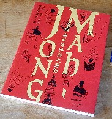
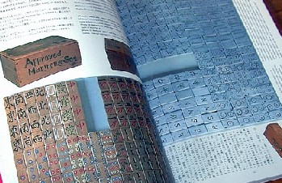
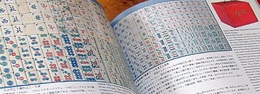

麻雀博物館図録編纂委員会【編】ISBN481-2404-738 167ｐ 30ｃｍ（Ａ４）竹書房
(1999-04-20刊)\3,000(税別)
1999年４月、千葉県岬町に麻雀博物館がオープンするにあたって、博物館が総力を挙げて刊行した図録。監修したのは、法政大学の江橋崇(えはしたかし)教授（当時）。江橋教授は、トランプ・花札などカード類はもちろん、麻雀においても当代一の研究者。そんな研究者の監修であるから、とうぜん学術的にも高いレベルにある。
それだけでなく豊富なカラー写真満載で、見るだけでも楽しい。とにかく麻雀博物館には、世界の珍奇牌がズラリであるが、それらを解説付きで眺めることが出来る。内容は、次の４部からできている。
第１部 いま開かれる麻雀文化・歴史の扉
ここでは主として古典の珍奇牌の数々が収録されている。

左側がプリズン牌。＃プリズン牌についてはココを参照。
右側は1950年代のベトナム独立戦争のとき、フランス軍工兵が手作りした金属牌。工兵は、1960年、ベトナム独立戦争で最後の激戦地となったディエンビエンフーの戦闘でベトミンの捕虜となった。1970年に解放されるまで、無聊を慰めるため、得意の腕をふるってこの牌を制作したという。筒子、索子の図柄はほどほどであるが、さすがに万子は字体があいまいなところがいい。
＃解放後、記念に持ち帰った。死去後、遺族が競売に出品。
第２部 彙集・麻雀文化財
彙集は、竹崎絵里「麻雀前史」、浅見了「中国麻雀初史」、江橋崇「麻雀の前身・紙牌と骨牌」、梅林勲「東南アジアの紙牌」などの各種論文。麻雀文化財は、中国・日本・欧米・東南アジアの各種紙牌や珍奇牌。

写真が小さくて見えにくいが、左側の牌は１索がタケノコ。 や や が竹なら、１索はタケノコだろう、というしごくもっともな話。(^-^) 右ページの牌は上海製であるが、欧米に輸出された牌。 が竹なら、１索はタケノコだろう、というしごくもっともな話。(^-^) 右ページの牌は上海製であるが、欧米に輸出された牌。
第３部 もう一つの麻雀文化
麻雀とは一心同体である麻雀卓の数々を収録。また日本最初の麻雀荘「南山荘」、日本麻雀の隆盛を支えた上海公司、手彫り牌職人の世界などの紹介。
第４部 中国・日本・欧米の麻雀文献
浅見了「中国の麻雀文献」、浅見了「香港台湾の文献史」、鈴木知志「日本の麻雀文献」、江橋崇「欧米の麻雀文献」 いずれも麻雀学に興味がある人なら、一読すべき論考ばかり。
これだけの内容、また写真製版の本であれば、最低でも１万円の定価がついていても不思議ではない。しかし最初から利益など考えていない。そこで頒価は¥3000-であった。おまけに限定部数出版であったため、あっという間に売り切れ。いまや博物館へ出かけて入手不可能。再版の予定もないので、どうしてもとなれば古書店やネットオークションなどで探求するしかない。
現在、古書価格は５千円前後か。しかし再版される予定もない。となればすぐ１万円くらいになる可能性も大いにある。あ、古書店の皆さん、ここを見ないように....(^-^；
|